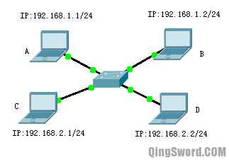
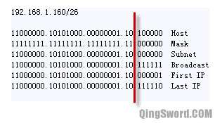
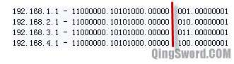

[CCNA图文笔记]-4-IP地址详解
引言
这篇文章给大家介绍关于IP地址十进制和二进制之间的转换、IP地址的分类、IP子网划分、子网掩码以及公有地址和私有地址等CCNA基础知识。
文章目录
0×1.二进制和十进制之间的转换
IPv4地址使用32位二进制数格式，通常使用点分十进制数来表示，如202.101.123.21,对应的二进制数就是(11001010.01100101.01111011.00010101)下面是这个二进制和十进制之间的转换方法；
二进制转十进制：
11001010.01100101.01111011.00010101
第一组二进制是11001010，可以使用1×2^7+1×2^6+0×2^5+0×2^4+1×2^3+0×2^2+1×2^1+0×2^0=202，后面几组同理，但是这样计算太麻烦，有一个简便方法，因为每组二进制都是8位，而每一位对应的十进制数都是不变的；
比如：二进制11111111等于128+64+32+16+8+4+2+1=255，而我们只要记住这八位从大到小的对应的十进制就可以了（128、64、32、16、8、4、2、1），11001010就可以直接得出128+64+8+2=202，10000001=128+1=129，00010101=16+4+1=21；
十进制转换二进制：
202.101.123.21
可以使用短除法除以2直到商0，比如
202/2=101余0
101/2=50余1
50/2=25余0
25/2=12余1
12/2=6余0
6/2=3余0
3/2=1余1
1/2=0余1
然后从下往上，将余数写出来就是11001010，也就是202的二进制形式；
实际上也有简便方法，就是将IP地址对应的十进制数凑成（128、64、32、16、8、4、2、1）可以组合出的那个数，比如202=128+64+8+2，按照十进制数字表（128、64、32、16、8、4、2、1）从高位到低位，如果出现这个数字就填1，没有出现这个数字就填0，很容易就能得,202就是二进制的11001010，再比如101=64+32+4+1也就是二进制的01100101；
0×2.IPv4地址分类
一个IPv4地址主要有两部分组成：一部分用于标识该地址所属网络号，一部分用于标识该网络中某个特定主机。
* IPv4将IP地址分为5类：
A类：前8位用来标识网络号，后面24位用来标识主机，所以每个A类网络可以有2^24次方个IP地址，全球只有126个A类网络，2^8-2=126(规定0不允许使用，而127被用作回环测试地址)。A类网络第一个字节十进制范围是1（00000001）-126（01111110）；
B类：前16位用来标识网络号，后16位用来标识主机，第一个字节十进制范围从128(10000000)-191(10111111),全球共有2^14个B类网络，每个B类网络可以容纳2^16个主机；
C类：前24位用来标识网络号，后8位用来标识主机，第一个字节十进制范围从192（11000000）-223（11011111），全球共有2^21个C类网络，每个C类网络的主机数是2^8=256个；
D类：第一个字节十进制范围从224(11100000)-239(11101111)，这类地址用于组播，全球共用2^28个组播地址；
E类：第一个字节十进制范围从240-255，科研保留地址，共2^28个；
a.保留IP地址
每个网络中实际可容纳的主机数量是理论主机数量减2，这是因为有两个地址被保留：
网络地址——网络位不变，主机位全0的地址，表示网路本身，如192.168.1.0/24；
广播地址——网络位不变，主机位全1的地址，表示本网络的广播，如192.168.1.255/24（/24表示网络位是24位，也就是子网掩码为255.255.255.0）；
b.私有地址
RFC1918规定了三段私有地址，作为内部组网使用，分为三类：
A类：10.0.0.0—10.255.255.255（共2^24个）
B类：172.16.0.0—172.31.255.255（共2^20个）
C类：192.168.0.0—192.168.255.255（共2^16个）
Internet上的路由不会配置这些IP地址，如果有去往这些私有地址的数据包，会被路由丢弃。
有了这些私有地址段，一些组织或团体对外只需要一个公网IP，通过端口地址转换（PAT）让内外网进行通信，如今互联网上的IPv4地址仍然没有被消耗尽，私有地址功不可没。
0×2.IP子网划分
a.实例一
四台PC的IP地址如下图，他们连接在一台交换机上，交换机工作正常，设备之间连线没有问题，如何让它们之间都可以正常互访？（不考虑防火墙等因素）
问题分析：上图中A、B、C、D的网络位都是24位(子网掩码255.255.255.0)，那么A和B同处在一个子网192.168.1.0，而C和D处在一个子网192.168.2.0，这个时候A和B能够互访，C和D能够互访，而AB和CD之间无法互访。
方法一：将他们改成一个子网，可以将C和D都改成192.168.1.0/24子网，反之可以将AB都改成192.168.2.0/24子网，这样四台计算机处于相同的子网中，可以相互通信。
方法二：修改四台PC的子网掩码为/22(255.255.252.0),这样他们同处在192.168.0.0子网中。
方法三：将中间的二层交换机换成三层交换机，并将A和B划分到一个VLAN里面，给这个VLAN分配一个IP地址192.168.1.254，将A和B的默认网关改成192.168.1.254，同时将C和D划分到另外一个VLAN给这个VLAN分配一个IP地址192.168.2.254，将C和D的默认网关改成192.168.2.254，这样通过三层交换机路由模块将两个不同网段连接起来，实现互访。
b.实例二
某个C类网络地址被某公司申请，网络地址是202.1.1.0/24，该公司有5个项目组，每个项目组有28台计算机，问：仅使用202.1.1.0/24，如何将这5个项目组分配到不同子网中？
问题分析：202.1.1.0/24属于C类地址，前24位是服务商提供，不能改变，所以只能调整后8位主机位，有5个项目组，所以需要从后8位中借出至少3位(2^3=8)可以分成8个子网，而剩余的5位（2^5=32）能容纳32-2=30台计算机，刚好符合5个项目组，每个项目组只有28台PC的情况。
从主机位中借出三位，网络位变成24+3=27位，子网掩码为 255.255.255.224
借出的三位可以组合成下面8种形式：
000
001
010
011
100
101
110
111
加上固定的前24位，转换成十进制就是：
202.1.1.0/27
202.1.1.32/27
202.1.1.64/27
202.1.1.96/27
202.1.1.128/27
202.1.1.160/27
202.1.1.192/27
202.1.1.224/27
在Cisco-CCNA考试中默认是不支持全0和全1的子网的，除非特别说明。
公司只有5个项目组，在不使用全0和全1的子网的前提下(不使用202.1.1.0/27和202.1.1.224/27)，划分如下：
IP范围202.1.1.32-202.1.1.63，子网202.1.1.32，网关202.1.1.33，子网广播202.1.1.63，可用IP从34-62，掩码/27
IP范围202.1.1.64-202.1.1.95，子网202.1.1.64，网关202.1.1.65，子网广播202.1.1.95，可用IP从66-94，掩码/27
IP范围202.1.1.96-202.1.1.127，子网202.1.1.96，网关202.1.1.96，子网广播202.1.1.127，可用IP从97-126，掩码/27
IP范围202.1.1.128-202.1.1.159，子网202.1.1.128，网关202.1.1.129，子网广播202.1.1.159，可用IP从130-158，掩码/27
IP范围202.1.1.160-202.1.1.191，子网202.1.1.160，网关202.1.1.161，子网广播202.1.1.191，可用IP从162-190，掩码/27
IP范围202.1.1.192-202.1.1.223，子网202.1.1.192，网关202.1.1.193，子网广播202.1.1.223，可用IP从194-222，掩码/27 (暂时没有使用)
c.实例三
一台计算机的IP和子网掩码是192.168.1.160/26，问：这台计算机所在子网、子网广播、子网中第一个可用IP、子网中最后一个IP、子网一共有多少IP可用？
其实这个例子在经常划分子网的高手眼里几乎就是一眼能看出来，但是为了让新手朋友能够很好的理解，下面给出一个比较通用的步骤：
上图中，Host对应的是主机IP的二进制表示，Mask是子网掩码的二进制表示，子网掩码26位，所以主机位全0的就是子网地址Subnet，换算成十进制就是（192.168.1.128），主机位全1的就是广播地址Broadcast，换算成十进制就是（192.168.1.191）,而子网中第一个IP地址就是（192.168.1.129），最后一个IP地址自然就是（192.168.1.190），子网中一共2^6-2=62个IP地址可用。
d.实例四
将下面这组C类IP地址汇总成一条IP地址：
192.168.1.1/24
192.168.2.1/24
192.168.3.1/24
192.168.4.1/24
汇总可以减小路由表的大小，汇总的方法就是将需要汇总的IP转换成二进制，将共同的部分取出来，然后在根据共同的部分占用的位数来写出子网掩码。上面的4个IP地址转换成二进制如下图：
不难看出，红线前面的部分对于四个IP地址来说是相同的，一共21位，所以这组IP汇总后的IP是（192.168.0.0/21）